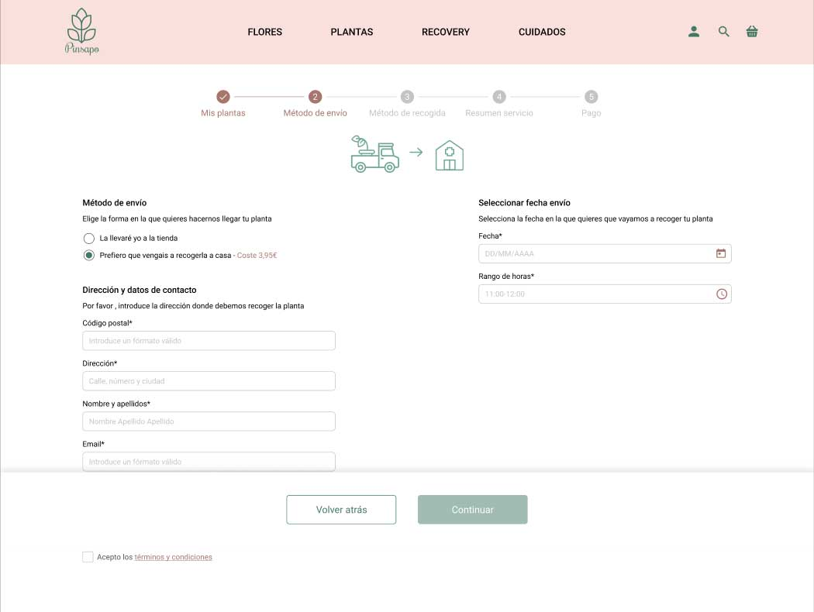

Ecommerce
Floristería Pinsapo
Tipo de proyecto: grupal (3 miembros)
Herramientas utilizadas
Todo el proceso de este proyecto se basó en las fases del Design Thinking, que son 5: Empatizar, Definir, Idear, Prototipar y Testear.
Se pusieron en practica herramientas que pertenecen a las diferentes fases como son las siguientes:
- - Desk Research
- - Entrevistas (Stakeholder y consumidores)
- - Encuestas (Consumidores)
- - Lean Survey Canvas
- - Afinnity Diagram
- - Empathy Map
- - Definición de user persona
- - User Journey
- - Crazy 8
- - Strategy Blue Print
- - ETC.
Objetivo del proyecto
Diseñar un sitio web o App para una empresa local. Para conseguir aumentar sus ventas o potenciar los servicios que ofrece, hacer todo más accesible a los usuarios.
Contexto del proyecto
Este proyecto se basa en torno a una floristería, Pinsapo, ubicada en Madrid. Es un negocio familiar y se dedica a la venta de flores y plantas. Solo dispone de tienda física y lo que más vende son flores y plantas.
Research
Hicimos una investigación sobre el consumo de flores y plantas, así como, benchmark de los competidores directos para ver qué servicios ofrecían, cómo los destacaban en su web y qué hace que se diferencien del resto. Ya que después de realizar este análisis competitivo nos dimos cuenta que existen varias floristerías online especializadas en servicios similares. Teníamos que centrar nuestro foco en un servicio que fuese útil para el usuario.
El problema
Tras realizar diferentes entrevistas y encuestas a consumidores, se detectó que el principal problema es que el 35% de 55 encuestados se les mueren las plantas por desconocimiento en sus cuidados. Se sienten frustrados a la hora de comprar o no una planta y se les muera, debido al dinero y tiempo invertidos en ella. Esto unido a una falta de información sobre los cuidados de las plantas.
Definición
Usuario
Una vez analizados todos los datos recabados en las encuestas y entrevistas pasamos a definir nuestro User persona.

A Victoria le gustan las plantas y suele acudir de manera ocasional a la floristería. Le gusta decorar su casa con flores y plantas para hacerlas más acogedora y bonita. Pero ella no es experta en el cuidado de plantas por lo que necesita tener una mayor información de cómo cuidarlas y tratarlas.
Dispositivo
En este punto del proyecto decidimos realizar una web ya que la floristería no disponía de ninguna y podíamos aprovechar la ocasión para realizarla desde 0 con un nuevo diseño y de esta manera poder organizar toda la información y servicios de los que dispone la floristería Pinsapo.
Solución - Propuesta de valor
Crear un servicio que ayude en la recuperación de las plantas, el Servicio Recovery, facilitando al usuario un mantenimiento de las mismas y ofreciendo, además, consejos de cuidados post ingreso.
Este fue el principal problema a solucionar, ya que detectamos que la gente no compraba plantas por miedo a que se le muriesen o no saber darle los cuidados adecuados.
User Journey
Encontrado el problema principal de nuestros usuarios y la solución. Ideamos el user journey hipotético para ver cómo sería el paso a paso y los diferentes estados por los que pasaría el usuario.
Ideación
En esta fase realizamos un Moscow para detectar lo más esencial que necesitaríamos en la web.
Seguidamente a través del card sorting organizamos toda la posible información que tendríamos que mostrar en la web. Después de varias propuestas, consideramos que la organización de la web podría ser algo así.

Ya con todo más claro, a la hora de organizar la web pasamos a realizar un crazy 8 para ver cómo sería la home de la floristería Pinsapo.
Al realizar este ejercicio, todos los miembros del equipo, coincidimos en que tenía que destacar el servicio Recovery ya que es nuestra propuesta de valor. Decidimos utilizar una banner en la cabecera de la home donde se mostraría primero el servicio Recovery y luego el resto de servicios que ofrece la floristería.
Pasamos a la segunda fase de prototipar, es decir, a los wireframes. En este momento del proyecto teníamos todos definido en cuanto a arquitectura de la información y qué era prioritario, para nosotros y para el resto de usuarios, que se viese en la home.
Así como el diseño del servicio Recovery

En base a estos wireframes, tuvimos que hacer cambios y ajustes para que el servicio de Recovery pudiese funcionar de una manera más eficiente. Nos surgieron dudas a la hora plantear la selección de la planta, ya que se daba la posibilidad de que el usuario no supusiese cuál es o sino la encontraba fácilmente entre las imágenes que se le mostraban.
Y finalmente llegamos Hi-Fi. Primero de todo, definimos el style tile, para definir colores, tipografías…

Esta sería la home de la floristería Pinsapo. Donde destaca el servicio Recovery, además de poder ver el resto de servicios que tienen como la venta de plantas y flores.

Para saber más sobre el servicio Recovery y en qué consiste se creó una página para explicar el servicio y donde poder pedir cita directamente para el tratamiento de las plantas.

Imaginemos que nuestra user persona, Victoria, decide pedir cita porque una se sus plantas está enferma y no sabe cómo tratarla. En este caso, seleccionará su planta, pudiendo hacerlo a través de las diferentes categorías que se muestran.
A continuación, selecciona el método de envío y rellena los datos necesarios. También tiene la posibilidad de llevarla ella a la floristería, pero es mucho más cómodo que se la recojan en casa.
Después selecciona el método de recogida. Seleccionando el día y la hora.
Una vez que tenemos, los datos de envío y recogida, Victoria verá un resumen del su pedido.
Procedería al pago del servicio.
De esta manera, Victoria, ya tendría su cita con el servicio Recovery. Pasarían a buscar su planta y el florista, experto en plantas, la recibiría en su floristería, evaluaría el estado de la planta y aplicaría el mejor tratamiento para intentar salvar la planta.